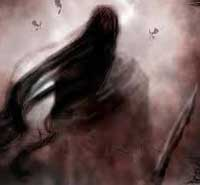
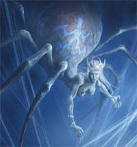
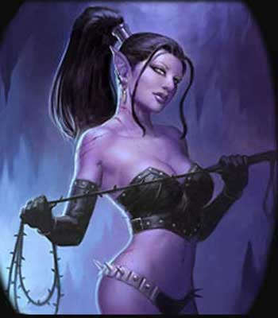
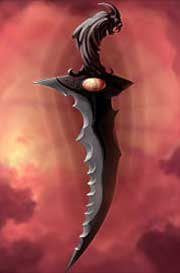
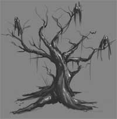
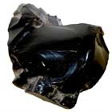
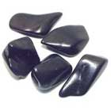
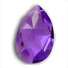

NOTIZIE
GENERALI
Gli elfi scuri sono una delle tante e diverse razze presenti su Arelia. Le loro origini si perdono nella preistoria più remota. Vi è una leggenda sulle loro origini, è una vecchia leggenda elfica anteriore alla separazione fra Erlin e Loderin, questa è chiamata in alto elfico “Shin - Rihan” ossia “Triste storia”, proprio a testimonianza di un grave dolore che nasce nel cuore degli elfi quando narrano questa storia [1]. La “Shin - Rihan” narra dell’ esistenza di Kalian [2], una dea sorella di Arlinir, forse gemella, ma legata dal fato, contrariamente alla dea degli elfi, a Chaos. Nel disegno divino ad Arlinir sarebbe dovuto spettare la foresta in cima all’altopiano mentre a Kalian sarebbero spettate le infinite caverne che si trovavano all’interno dello stesso; e così Kalian formò solidificando le ombre delle caverne ed aggiungendovi il fuoco di Chaos una nuova razza di elfi del tutto simile alle altre ma adatta alla vita sotterranea. Nacque così la civiltà di Hideroon [3]. Quando le divinità di Arelia rimasero sole senza i loro creatori, iniziarono una seconda spartizione delle zone di influenza che scatenò la “Divina Guerra” durante la quale un potente dio umano (Tanatos) decise di avere la supremazia sulle terre emerse. Il dio si invaghì però della splendida Arlinir alla quale concesse notevoli privilegi mentre si trovò a fronteggiare molte divinità che si opponevano al suo piano egemonico; fra queste era Kalian, che chiese numerose volte ad Arlinir di unirsi a lei stessa e di combattere per gli stessi ideali, ma Arlinir [4] non accolse questo appello anzi isolò completamente la sorella [5] che per resistere strinse un patto con Bazaràk uno dei più potenti oppositori del dio. In questo modo riuscì a resistere nel suo ambiente ideale, nel sottosuolo, ma questo patto fece si che l’intero popolo degli elfi scuri diventasse un popolo malvagio dedito a mostruosi sacrifici, spregevole delle altre razze ma comunque con molte doti fisiche e morali (le più risapute sono l’ordine e l’obbedienza).
_________________________________________
[1] E’ una leggenda famosa ed è narrata spesso dai nonni ai giovani elfi inesperti, con tono duro, sembra infatti che tale leggenda conservi un significato non ben identificato che deve essere inteso dallo “Hoarin” (qualche cosa fra il cuore e lo spirito, una specie di anima per gli elfi) di ogni elfo.
[2] Caso strano ma Kalian in alto elfico vuol dire odio.
[3] Che è anche il nome della città sotterranea che la leggenda dice trovarsi dentro l’altopiano.
[4] Giustificano gli elfi “Intimorita dal potente dio”...
[5] Da qui nascerebbe il grande odio dei Drow per gli altri elfi.
 |
DESCRIZIONI RAFFIGURANTI LA DIVINITÀ Una bellissima dea, un'elfa dalla pelle scura color ebano, slanciata e sensuale, con una chioma di capelli bianchi e che le scendono come morbida seta fino ai glutei, vestita di veli dal colore viola e con il viso coperto da un drappo nero (che simboleggia la reclusione alla luce del giorno). La leggenda parla di un viso così bello che incanterebbe qualsiasi essere mortale, dovrebbe avere gli occhi allungati e dal colore dell’argento splendente. Nessuno ha mai però visto il suo viso e si narra che solo i più fedeli servitori e sacerdoti possano osservarlo nel primo piano materiale un momento prima della loro morte. Chi ha osservato il loro sguardo perso ed il loro sorriso amaro ha definito quel momento come lo Sguardo di Kalian.
|
SEMI-DEI E MINORI
SEMI-DEI : Per accrescere il suo potere e per contrastare le forze della Fratellanza della Luce, Kalian si è servita di temibili e misteriose entità legate ai piani demoniaci od al piano negativo. Per ottenere il loro appoggio Kalian ha permesso a costoro di assurgere al rango di semi-divinità. Le entità dal potere semi-divino maggiormente conosciute sono le seguenti:
|
 |
Garanòt: Semi-dio delle tenebre e delle ombre. Entità malvagia adorata dagli assassini e dai ladri. E’ una divinità malvagia che acquista potere dal tradimento e predilige tattiche di combattimento considerate comunemente vili, come le imboscate, gli agguati e gli attacchi alle spalle. E’ rappresentato da un guerriero d'ombra dai lunghi capelli, le cui fattezze sono sfuggenti ed impercettibili. Questa entità è adorata soprattutto dagli Elfi Scuri assassini e vagabondi, ma essendosi diffusa la credenza che costei è la protettrice di queste classe non di rado capita di trovare suoi devoti anche tra le altre razze. |
|
 |
Xàlis: Semi-divinità alla quale Kalian ha riservato il controllo dei Drider, ossia dei sacerdoti che avendo fallito la prova divina sono scacciati dalla comunità trasformandosi nei temuti esseri mostruosi. Il suo culto è fra i più sanguinari che esistono ed è basato sull'adorazione individuale dei suoi malvagi sacerdoti che sono soliti sacrificarle vittime ancora vive. Raffigurata come un Drider dalla colore chiaro, quasi albino, con chiazze azzurro ghiaccio sull'addome da ragno che indossa la corona simbolo della sua nobiltà. Questa entità è adorata unicamente dai Draider ma è temuta dagli Elfi Scuri che ne rispettano la sacralità effettuando periodicamente alcuni riti in suo onore per accattivarsela ed evitare che trami contro le loro comunità. |
|
Zalamèsh:
Semi-dea creatrice e protettrice dei folletti malvagi che prendono il nome di
Dark Sprite.
E' la divinità
delle fores |
MINORI
Demoni
delle ombre :
Sono tremende creature a metà strada fra i
demoni e i non morti, che Kalian utilizza come emissari e sicari. Esistono di
diversa tipi e potenze.
Spiritelli
delle tenebre :
Sono
folletti della notte malvagi e cattivi, quando si intravedono preannunziano
brutti presagi.
DOVERI DEI MINISTRI DEL CULTO
Curare la prosperità del popolo degli elfi scuri e preparare la vendetta contro le creature della superficie, specie gli elfi. Incitare l’odio verso costoro e tramare piani di sterminio e di devastazione. Punire i deboli e gli indisciplinati. Mantenere l’ordine ed il rispetto delle rigide regole formali e gerarchiche sulle quali si fonda la società degli elfi scuri. I chierici di Kalian devono torturare ed uccidere, senza mostrare alcuna pietà gli elfi alti ed, in particolare, i ministri del culto di Arlinir. I chierici elfi scuri non possono unirsi carnalmente con altre razze.
ORGANIZZAZIONE DEL CULTO
Ogni comunità di elfi scuri di una discreta dimensione ha il suo Tempio della Notte. Questo tempio è guidato da un chierico di almeno 9° livello che assume il titolo di Sovrana della Notte, tutti gli altri invece servono al tempio rispettando alla lettera ciò che la Sovrana ordina. Tutti gli altri chierici che abbiano raggiunto almeno il 7° livello di esperienza sono investiti del titolo di Consigliere dell’Oscuro. Il Consigliere dell’Oscuro può effettuare tutti i riti ed è molto rispettato sul piano religioso, non ha però alcun potere politico e non può intromettersi nella gestione del tempio che è amministrato dalla Sovrana della Notte. E’ però libero dai comandi della Sovrana anche se non può mai agire in modo da ledere i di colei interessi. Nello stabilire qualora "venga meno" una Sovrana chi la debba sostituire e vi siano più Consiglieri dell’Oscuro di livello adeguato che ambiscano alla carica, costoro si riuniranno da soli nel tempio indossando solo la veste rituale e le porte saranno chiuse. La leggenda dice che a quel punto sarà la dea stessa ad effettuare la scelta del suo successore. Quando le porte si riapriranno la scelta sarà stata compiuta e spesso l'unico ad uscire dal luogo del consesso sarà la nuova Sovrana della Notte. Nel caso in cui nessun Consigliere dell'Oscuro sia di 9° livello, il tempio sarà gestito da un collegio formato da tutti i Consiglieri dell'Oscuro fino a che uno di costoro non raggiungerà il nono livello di esperienza divenendo di diritto Sovrana della Notte.
I chierici di basso livello hanno il titolo di Sacerdotesse delle Ombre e sono al servizio della Sovrana della Notte. o delle Sacerdotesse del Buio. Appena raggiunto il 5° livello per poter passare al titolo di Sacerdotesse del Buio costoro devono superare la prova della loro divinità e qualora falliscano subiscono l'esilio e la mutazione in drider. Una volta superata la prova le Sacerdotesse del Buio devono costituirsi una loro zona sacra privata all'interno dell'area sotto l'influenza del Tempio della Notte. Si tratta di una zona nella quale svolgeranno i riti minori in onore alla loro divinità e dove potranno seguire i dettami della loro fede.
Come la grande maggioranza delle comunità Drow anche il culto di Kalian è un vero matriarcato fondamentalmente riservato agli Elfi Scuri di sesso femminile, sono poche le eccezioni maschili e molto raramente assurgono al ruolo di Consigliere dell’Oscuro, non si racconta siano mai divenuti Sovrani della Notte di nessun Tempio. Le sette di adoratori di Garanòt sono invece per lo più guidate da sacerdoti dal sesso maschile. Sebbene ogni tempio, come accade per il culto del Serpente, sia indipendente nella gestione e nelle scelte politiche le lotte fra i diversi templi sono estremamente rare, fra questi solitamente c'è generalmente un rapporto di collaborazione al fine di compiere azioni comuni e prestarsi soccorso nei momenti di difficoltà.
SIMBOLI ED OGGETTI FONDAMENTALI DEL CULTO
|
Simbolo sacro :
Il Simbolo Sacro di Kalian prende il nome di
Sguardo nel Buio.
Si tratta di un medaglione dal peso di 0,2 libbre e dal diametro di 10
centimetri indossato al collo dai ministri del culto. L'interno del
medaglione che è realizzato in argento è dipinto di viola e al suo
centro è scolpito l'occhio della divinità. L'occhio simboleggia il
potere degli Elfi Scuri di penetrare il buio anche assoluto con la loro
potente infravisione. La pupilla è realizzata incastonando un gemma che
varia a seconda del titolo posseduto dal sacerdote come indicato nel
seguente schema: |
|
 |
Pelli Sacre : Sono le veste sacra dei Sacerdoti di Kalian. Le Sacerdotesse delle Ombre possono indossare solo queste vesti mentre i sacerdoti di rango superiore devono indossare, sopra a tali indumenti, il Droon. Si tratta di vesti di pelle nera di buona qualità assai succinte e costituite da un corpetto, da lunghi guanti capaci di avvolgere quasi interamente le braccia, una protezione genitale, una cintura spesso con borchie o punte di metallo ed un paio di stivali. Queste vesti non hanno tasche ed hanno un peso pari a 2,5 libbre ed un costo pari a 15 monete d'oro. A partire dal rango di Sacerdotesse del Buio la pelle deve divenire di colore rosso ed i guanti sono sostituiti da bracciali d'argento, inoltre i vari capi saranno uniti tra loro da un sottile velo costituito da tela di ragno e seta, per un costo complessivo pari a 75 monete d'oro. |
 |
Il Droon : E’ la veste sacra dei Sacerdoti di Kalian, a partire dal rango di Consigliere dell’Oscuro. Costoro devono necessariamente indossarla, dovendo portare sotto la stessa unicamente le Pelli Sacre del rango delle Sacerdotesse del Buio. E’ formata da una lunga gonna di seta pregiata di color rosso sangue sulla quale è intrecciata una struttura a forma di ragnatela di tela di ragno, prodotta con le secrezioni filamentose di alcuni ragni del sottosuolo allevati appositamente, intrecciata a fili d'argento. Parimenti tale struttura, flessibile forma una mantella che ricopre anche le spalle del sacerdote. Esclusivamente per i sacerdoti devoti a Garanòt il colore della seta della veste è nero anziché rosso. Il peso della veste è pari a 3,5 libbre ed il suo costo è pari a 300 monete d'oro. |
|
Tatuaggio
della Vedova Nera
:
Si tratta del tatuaggio che tutti i fedeli di Kalian possono farsi non appena
raggiungono l'età della ragione che, coincidendo con l'inizio
dell'adolescenza, inizia per gli Elfi Scuri a cinquant'anni. Il
tatuaggio deve essere apposto quando costoro decidono di divenire fedeli
della divinità. Da allora in poi, costoro si impegnano a versare il
10 % delle loro entrate lorde al culto per sovvenzionarlo. Si tratta di una
strada di sola andata e la scelta non può essere cambiata, coloro che lo
fanno sono ritenuti traditori e condannati alla pena
dell'albero insanguinato
(si tratta della pena di morte "religiosa" degli Elfi Scuri che consiste nel legare
il condannato nudo ad un albero morto, fustigarlo con un gatto a nove code
chiodato e poi aprire su costui dei tagli che lo lascino morire dissanguato nel
giro di 12 ore, il sangue così versato nutrirà le radici dell'albero che
alcune volte di dice potrebbe tornare a nuova "non-vita"). Nelle
ipotesi in cui la comunità di Elfi Scuri è di fatto una teocrazia, la scelta di
divenire o meno fedeli è del tutto fittizia, non scegliere di divenire fedeli
quando si ha la chiamata alla fede significherebbe infatti essere bandito o
subire la pena prima descritta. |
|
 |
Nightdagger: Un pugnale dalla lama leggermente ricurva, irregolare e seghettata da uno dei due lati. L'impugnatura è ricoperta da pelli di animali notturni od esseri mostruosi (come da ali di pipistrelli o corteccia di troll). Il suo valore è mediamente di 100 monete ma i più belli possono raggiungere anche le 1000 monete d’oro. Spesso utilizzato anche come arma simboleggia la vendetta ed e’ usato per i sacrifici e per altri rituali sacri. Devono necessariamente possederlo i chierici dal rango di Sacerdotesse del Buio in poi, in quanto strumento necessario per effettuare i doverosi sacrifici rituali. Questo pugnale per tutte le finalità può essere considerato un pugnale della tipologia Jambiya (link) e può essere utilizzato regolamento in combattimento. |
|
 |
La foresta morta : Simbolo di sofferenza e di sacrificio, è una foresta che viene fatta morire per privazione di luce e poi fatta essiccare con polveri ed unguenti speciali che finiscono per pietrificare il legno degli alberi. Tale foresta si trova presso ogni tempio o zona sacra a Kalian in modo che tutti gli Elfi Scuri possano tenere sempre presente ciò che gli è stato fatto e meditare rancore e odio verso gli abitanti della superficie. |
L’altare di ebano nero per i sacrifici : Si trova in tutti i templi ed è utilizzato per effettuare i sacrifici in nome della divinità.
I calici di argento : Nei quali viene raccolto il sangue delle vittime di Kalian che viene poi bevuto od utilizzato in vari riti.
PRINCIPALI REGOLE RELIGIOSE
Assolutamente nessun rito e nessuna zona sacra si troverà mai esposta alla luce del giorno. I templi sono illuminati da luci di candele e l’atmosfera oscura forma nel tempo il carattere dei sacerdoti e dei fedeli.
Tutti i sacerdoti di Kalian, a partire dal rango di Sacerdotessa del Buio, devono donare annualmente (nell'ultimo giorno dell'anno, X, III decade, Croon) alla dea 30 Punti della Notte ottenuti unicamente attraverso i rituali sacrificali (link). I chierici devoti a Garanòt dovranno donare alla semidivinità 6 Punti della Notte supplementari. Se non ha a disposizione questi punti da quel momento in poi non accumulerà più punti esperienza come chieirco (non saranno coinvolti i punti partenza dei giocatori ed i punti esperienza di eventuali altre classi) fino a che non accumulerà 35 Punti della Notte (37 se devoti di Garanòt), non appena li avrà accumulati li perderà e dal giorno successivo potrà accumulare nuovamente punti esperienza come chierico. Se, paradossalmente, passano più anni senza che il chierico paghi il suo debito in Punti della Notte si accumuleranno.
| Pietra Ornamentale |
Pietra Preziosa |
Gemma
Rara |
| OSSIDIANA | GIAIETTO | AMETISTA |
|
 |
 |
 |
SCHEMA DI GIOCO
Allineamento
Divinità
: Lawful Evil
Lame Oscure : Lawful Evil
Chierici
:
Lawful Evil
Chierici
devoti di
Garanòt:
Neutral o Chaotic Evil
Fedeli
: Tutti eccetto Good
Abilità
minime richieste
Saggezza 13, Carisma 12, Intelligenza 11
Un sacerdote di Kalian che abbia un punteggio di almeno Saggezza 15, Carisma 14 ed Intelligenza 13 otterrà un bonus del +10% ai punti esperienza. Qualora il sacerdote rispetti solo due dei suddetti requisiti, costui otterrà un bonus del +5% ai punti esperienza.
Razze
permesse
Elfi Scuri (raramente possono trovarsi adoratori o sacerdoti di Garanòt tra le altre razze ma in nessun caso tra gli Elfi Alti)
Mezzi Elfi Scuri (vedi collegamento)
Nota bene : per permettere di giocare un chierico di Kalian ad un giocatore si sconsiglia di lasciare usare un drow puro, sia per il suo potere che per le sue eccessive limitazioni, è preferibile invece accordarsi per fargli giocare un Half-Drow come sopra specificato.
NonWeapon
Proficiencies ( priest, general )
Required = Religion, Reading/Writing
Raccomandate =
Healing
Weapon
Proficiencies
Required = Nessuna
Armi
e armature permesse
Nessuna armatura e nessuno scudo
Bone Dagger, Needle Dagger, Jambiya e Whip
POTERI SPECIALI
Momento di flusso dell'energia divina : Il momento utilizzato da Kalian è il cuore della notte (ore 1.30).
Dominare gli Undead
: Con
la sola limitazione che in nessun caso può utilizzare il risultato di "Permanent
Domination" (link).
Pacificare gli Aracnidi
: I chierici di Kalian possono utilizzare i tentativi di dominare i non morti al
fine di pacificare gli aracnidi. Questo tentativo può essere posto in essere su
qualsiasi creatura appartenga alla sotto-categoria dei ragni all'interno
della categoria dei parassiti (link).
Quest'azione rappresenta un'azione complessa, assimilabile in tutto e per tutto
al lancio di un incantesimo, avente fattore iniziativa pari a +5 che richiede
componenti verbali (invocazione a Kalian) somatici e materiali (il simbolo sacro
del chierico) ed il mantenimento della concentrazione. Il tentativo può essere
effettuato su un singolo ragno che si trovi entro 18 metri di distanza dal
chierico. Il ragno dovrà, quindi, superare un tiro salvezza su mente, al quale
andrà applicato il modificatore dovuto alla differenza di livello tra il
chierico e l'aracnide. Se il tiro salvezza fallisce il ragno diventerà
pacificato nei confronti del chierico e dei suoi alleati e non li attaccherà
qualunque cosa accada (anche qualora costoro attacchino altri aracnidi presenti
nella zona) limitandosi ad ignorarli. Il ragno risulterà pacificato fino al
successivo momento di flusso di energia divina di Kalian. Qualora, però, il
ragno viene attaccato direttamente dal chierico o da un suo alleato questo
effetto terminerà immediatamente. Se il tiro salvezza riesce, il ragno non sarà
influenzato dal tentativo e non potrà essere sottoposto ad un nuovo tentativo di
pacificazione da parte dello stesso chierico fino al successivo momento di
flusso di energia divina di Kalian.

I devoti di Garanòt ottengono i
seguenti benefici:
- L'incantesimo Darkness
del primo livello di potere generale riceve le seguenti modifiche:
Raggio
30 metri,
Casting Time
3,
Durata
3 turni.
- L'incantesimo
Spider Bite del primo livello di potere
speciale riceve le seguenti modifiche:
Durata
1 r. + 1 r. per livello
Effetto
- 5% tiro salvezza.
- L'incantesimo
Shadow Cover
del primo livello di potere speciale riceve le seguenti modifiche:
Durata
3 turni per livello
Effetto
50%, +3% a livello di
lancio.
- L'incantesimo
Dark Touch
del secondo livello di potere speciale riceve le seguenti modifiche:
Durata
base
5 round
Effetto
1d6+1 danni supplemnetari.
Incantesimi
Si tratta di incantesimi che hanno tutti a che fare con la notte, i ragni, l'oscurità, la vendetta e il dolore. Inoltre, per il legame di Kalian ai piani negativi alcune magie possono utilizzare fonti di energia negativa.
Nota di ruolo: Gli incantesimi di Kalian sono fatti gratuitamente agli elfi scuri che si siano sottomessi al volere della fede della notte ed abbiano il tatuaggio della vedova nera sul polso destro. Costoro però si sono obbligati a versare il 10% di tutte le loro entrate lordo per finanziare il culto di Kalian. Molto raramente gli incantesimi sono fatti per il bene di non fedeli o di fedeli di altre divinità alleate, in questo caso è richiesto un pagamento in denaro che varia da Tempio a Tempio ma si basa per lo più sul sistema adoperato dal Tempio Supremo del Culto del Serpente di Pergar, ciò in quanto essendo questo potente Tempio alleato alla più importante fazione di elfi scuri di Arelia ha indirettamente influenzato anche la politica della gestione della magia clericale nei confronti degli esterni al culto di Kalian.
Incantesimi generali (Player's Handbook,Tome of Magic,Spell and Magic,Necromancers)
Gli incantesimi di questo colore funzionano solo nel sottosuolo, ossia nei tunnel, nelle caverne e nei sotterranei, non funzionando dunque all'aperto od in edifici costruiti sopra il livello del suolo.
1° livello
|
|
|
Call Upon Faith |
|
Cause Fear |
|
Combine |
|
Command |
| Darkness |
|
Detect Magic |
| Detect Poison |
|
Endure Cold/Endure Heat |
|
Malison |
|
Protection from Chaos (interdetto ai devoti di Garanòt) |
|
Protection from Good |
|
Sanctuary
|
| Augury |
|
Chant |
|
|
|
Ethereal Barrier |
|
|
|
Hold
Person
(interdetto
ai devoti di Garanòt) |
|
Resist Acid and Corrosion |
|
Sancitfy (funziona
solo nel sottosuolo) |
| Silence 15’ radius |
|
Wyvern Watch |
|
Zone of Truth (interdetto ai devoti di Garanòt) |
3° livello
| Bestow Minor Curse |
| Death’s Door |
| Dispel Magic |
| Efficacious Monster Ward (interdetto ai devoti di Garanòt) |
| Etherealness |
|
Glyph of Warding |
| Magical Vestment |
| Protection from Amorphs |
| Remove Paralysis |
4° livello
| Defensive Armony |
| Detect Lie (interdetto ai devoti di Garanòt) |
|
Dimensional Anchor (funziona
solo nel sottosuolo) |
| Divination |
| Focus |
|
Free Action |
| Holy Sight |
|
Protection from |
Incantesimi speciali (Unici della divinità)
1° livello
| Blessed Stroke |
| Cocoon Regeneration |
| Corpse Disposal |
| Darkfire |
|
Last Sleep |
|
Shadow Cover |
|
Spider Bite |
|
Summon Black Tarantula |
|
Web Stroke |
2° livello
| Caress of Kalian |
| Cloak of the Night |
|
Dark Touch |
|
|
|
Passweb |
|
Shadow Image |
|
Summon Giant Spider |
3° livello
|
Arthropod Frenzy |
| Dagger of Blood Draining |
|
Kalian Revenge |
|
Lesser Spellsong |
| Poison Immunity |
|
Summon Assassin Spider |
|
Whip of the Abyss |
4° livello
| Enlarge Giant Spider |
|
Maddening Echoes
(funziona
solo nel sottosuolo) |
|
Persistent Shadow |
|
Shadows of Draining |
|
Web Nest |